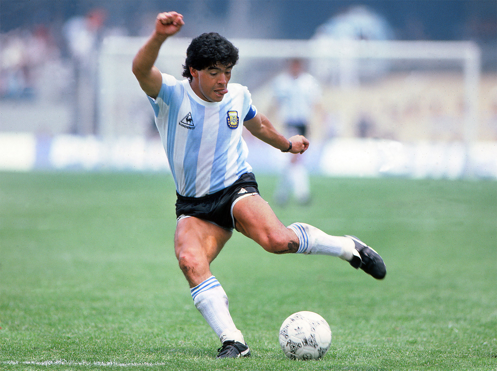
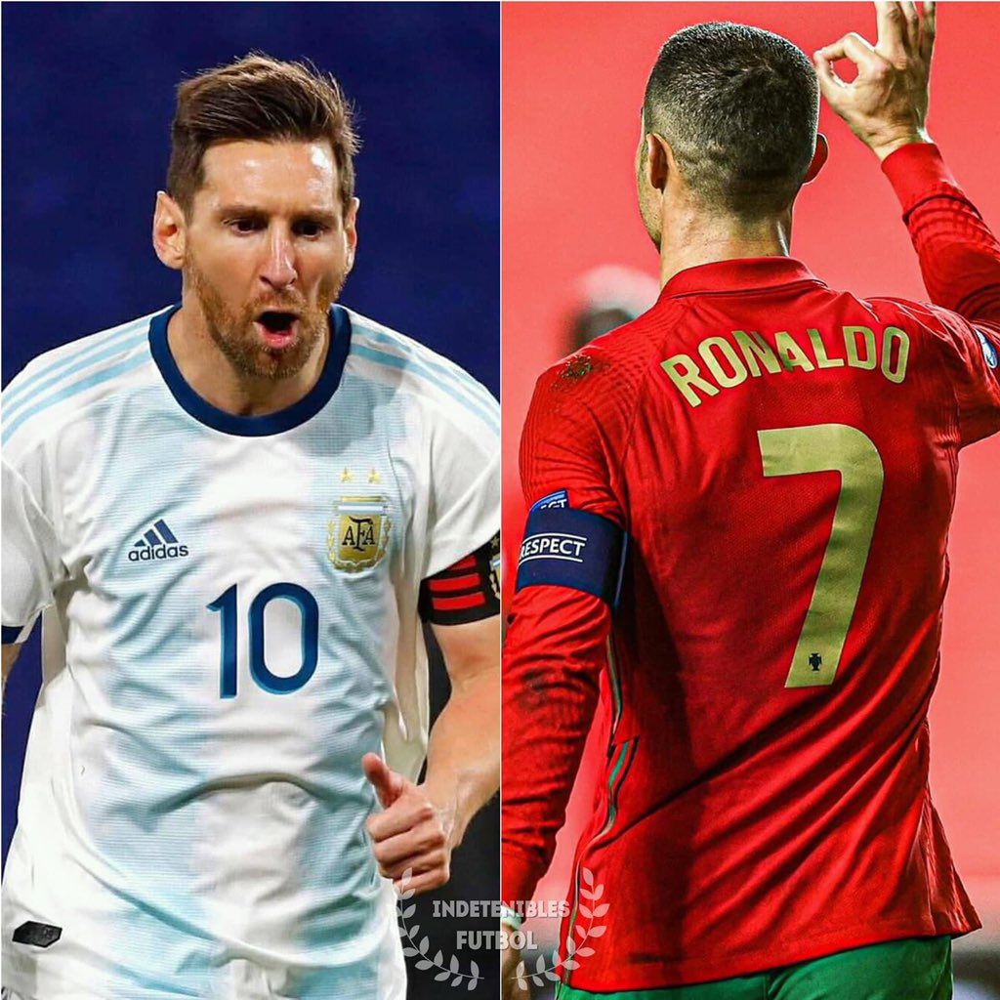

Mitos del BalónLas verdaderas leyendas del fútbol consiguieron su lugar en la eternidad debido a sus actuaciones legendarias en lasCopas del Mundo. Iconos históricos como Pelé, reconocido como el único futbolista en ganar tres mundiales, y Diego Armando Maradona, con su histórica e inolvidable campaña en el mundial de 1986, demostraron una magia en la cancha que inspiró a millones de jóvenes deportistas. Estrellas ContemporáneasEn el torneo de la era moderna, nuevas figuras han grabado sus nombres con letras de oro. Jugadores de clase mundial como Lionel Messi, consolidando su legado absoluto al levantar el trofeo en una final histórica, y Cristiano Ronaldo, rompiendo récords mundiales de goleo en múltiples ediciones consecutivas, se han unido formalmente al grupo más exclusivo de la historia del deporte rey.
  |